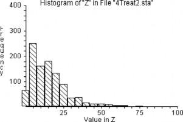
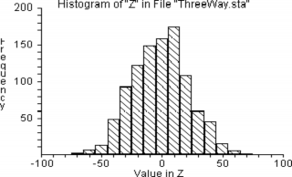
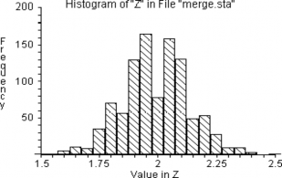
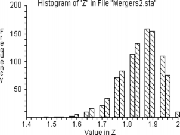

23 The Statistics of Hypothesis-Testing with Counted Data, Part 2
This page is an automated and partial import from the original second-edition PDF.
We are in the process of updating this page for formatting, and porting any code from the original RESAMPLING-STATS language to Python and R.
Feel free to read this version for the sense, but expect there to be multiple issues with formatting.
We will remove this warning when the page has adequate formatting, and we have ported the code.
Here’s the bad-news-good-news message again: The bad news is that the subject of inferential statistics is extremely difficult — not because it is complex but rather because it is subtle. The cause of the difficulty is that the world around us is difficult to understand, and spoon-fed mathematical simplifications which you manipulate mechanically simply mislead you into thinking you understand that about which you have not got a clue.
The good news is that you — and that means you , even if you say you are “no good at math” — can understand these problems with a layperson’s hard thinking, even if you have no mathematical background beyond arithmetic and you think that you have no mathematical capability. That’s because the difficulty lies in such matters as pin-pointing the right question, and understanding how to interpret your results.
The problems in the previous chapter were tough enough. But this chapter considers problems with additional complications, such as when there are more than two groups, or paired comparisons for the same units of observation.
23.1 Comparisons among more than two samples of counted data
Example 17-1: Do Any of Four Treatments Affect the Sex Ratio in Fruit Flies? (When the Benchmark Universe Proportion is Known, Is the Propor tion of the Binomial Population Affected by Any of the Treatments?) (Program “4treat”)
Suppose that, instead of experimenting with just one type of radiation treatment on the flies (as in Example 15-1), you try four different treatments, which we shall label A, B, C, and D. Treatment A produces fourteen males and six females, but treatments B, C, and D produce ten, eleven, and ten males, respectively. It is immediately obvious that there is no reason to think that treatment B, C, or D affects the sex ratio. But what about treatment A?
A frequent and dangerous mistake made by young scientists is to scrounge around in the data for the most extreme result, and then treat it as if it were the only result. In the context of this example, it would be fallacious to think that the probability of the fourteen-males-to-six females split observed for treatment A is the same as the probability that we figured for a single experiment in Example 15-1. Instead, we must consider that our benchmark universe is composed of four sets of twenty trials, each trial having a 50-50 probability of being male. We can consider that our previous trials 1-4 in Example 15-1 constitute a single new trial, and each subsequent set of four previous trials constitute another new trial. We then ask how likely a new trial of our sets of twenty flips is to produce one set with fourteen or more of one or the other sex.
Let us make the procedure explicit, but using random numbers instead of coins this time:
Step 1. Let “1-5” = males, “6-0” = females
Step 2. Choose four groups of twenty numbers. If for any group there are 14 or more males, record “yes”; if 13 or less, record “no.”
Step 3. Repeat perhaps 1000 times.
Step 4. Calculate the proportion “yes” in the 1000 trials. This proportion estimates the probability that a fruit fly population with a proportion of 50 percent males will produce as many as 14 males in at least one of four samples of 20 flies.
We begin the trials with data as in Table 17-1. In two of the six simulation trials, more than one sample shows 14 or more males. Another trial shows fourteen or more females . Without even concerning ourselves about whether we should be looking at males or females, or just males, or needing to do more trials, we can see that it would be very common indeed to have one of four treatments show fourteen or more of one sex just by chance. This discovery clearly indicates that a result that would be fairly unusual (three in twenty-five) for a single sample alone is commonplace in one of four observed samples.
Table 17-1
Number of “Males” in Groups of 20 (Based on Random Numbers)
Trial Group A Group B Group C Group D Yes / No
>= 14 or <= 6
| 1 | 11 | 12 | 8 | 12 | No |
| 2 | 12 | 7 | 9 | 8 | No |
| 3 | 6 | 10 | 10 | 10 | Yes |
| 4 | 9 | 9 | 12 | 7 | No |
| 5 | 14 | 12 | 13 | 10 | Yes |
| 6 | 11 | 14 | 9 | 7 | Yes |
A key point of the RESAMPLING STATS program “4TREAT” is that each sample consists of four sets of 20 randomly generated hypothetical fruit flies. And if we consider 1000 trials, we will be examining 4000 sets of 20 fruit flies.
In each trial we GENERATE up to 4 random samples of 20 fruit flies, and for each, we count the number of males (“1”s) and then check whether that group has more than 13 of either sex (actually, more than 13 “1”s or less than 7 “1”s). If it does, then we change J to 1, which informs us that for this sample, at least 1 group of 20 fruit flies had results as unusual as the results from the fruit flies exposed to the four treatments.
After the 1000 runs are made, we count the number of trials where one sample had a group of fruit flies with 14 or more of either sex, and PRINT the results.
' Program file: "4treat.rss"
REPEAT 1000
' Do 1000 experiments.
COPY (0) j
' j indicates whether we have obtained a trial group with 14 or more of
' either sex. We start at "0" (= no).
REPEAT 4
' Repeat the following steps 4 times to constitute 4 trial groups of 20
' flies each.
GENERATE 20 1,2 a
' Generate randomly 20 "1"s and "2"s and put them in a; let "1"
' = male.
COUNT a =1 b
' Count the number of males, put the result in b.
IF b >= 14
' If the result is 14 or more males, then
END
COPY (1) j
' Set the indicator to "1."
' End the IF condition.
IF b <= 6
' If the result is 6 or fewer males (the same as 14 or more females), then
END
COPY (1) j
' Set the indicator to "1."
' End the IF condition.
END
END
' End the procedure for one group, go back and repeat until all four
' groups have been done.
SCORE j z
' j now tells us whether we got a result as extreme as that observed (j =
' "1" if we did, j = "0" if not). We must keep track in z of this result
' for each experiment.
' End one experiment, go back and repeat until all 1000 are complete.
COUNT z =1 k
' Count the number of experiments in which we had results as extreme as
' those observed.
DIVIDE k 1000 kk
' Convert to a proportion.
PRINT kk
' Print the result.
' Note: The file "4treat" on the Resampling Stats software disk contains
' this set of commands.In one set of 1000 trials, there were more than 13 or less than 7 males 33 percent of the time — clearly not an unusual occurrence.
Example 17-2: Do Four Psychological Treatments Differ in Effectiveness? (Do Several Two-Outcome Samples Differ Among Themselves in Their Propor tions? (Program “4treat1”)
Consider four different psychological treatments designed to rehabilitate juvenile delinquents. Instead of a numerical test score, there is only a “yes” or a “no” answer as to whether the juvenile has been rehabilitated or has gotten into trouble again. Label the treatments P, R, S, and T, each of which is administered to a separate group of twenty juvenile delinquents. The number of rehabilitations per group has been: P, 17; R, 10; S, 10; T, 7. Is it improbable that all four groups come from the same universe?
This problem is like the placebo vs. cancer-cure problem, but now there are more than two samples. It is also like the four-sample irradiated-fruit flies example (Example 17-1), except that now we are not asking whether any or some of the samples differ from a given universe (50-50 sex ratio in that case). Rather, we are now asking whether there are differences among the samples themselves. Please keep in mind that we are still dealing with two-outcome (yes-or-no, well-or-sick) problems. Later we shall take up problems that are similar except that the outcomes are “quantitative.”
If all four groups were drawn from the same universe, that universe has an estimated rehabilitation rate of 17/20 + 10/20 + 10/20 + 7/20 = 44/80 = 55/100, because the observed data taken as a whole constitute our best guess as to the nature of the universe from which they come — again, if they all come from the same universe. (Please think this matter over a bit, because it is important and subtle. It may help you to notice the absence of any other information about the universe from which they have all come, if they have come from the same universe.)
Therefore, select twenty two-digit numbers for each group from the random-number table, marking “yes” for each number “1-55” and “no” for each number “56-100.” Conduct a number of such trials. Then count the proportion of times that the difference between the highest and lowest groups is larger than the widest observed difference, the difference between P and T (17-7 = 10). In Table 17-2, none of the first six trials shows anywhere near as large a difference as the observed range of 10, suggesting that it would be rare for four treatments that are “really” similar to show so great a difference. There is thus reason to believe that P and T differ in their effects.
Table 7-2
Results of Six Random Trials for Problem “Delinquents”
| Trial | P | R | S | T | Largest Minus Smallest |
| 1 | 11 | 9 | 8 | 12 | 4 |
| 2 | 10 | 10 | 12 | 12 | 2 |
| 3 | 9 | 12 | 8 | 12 | 4 |
| 4 | 9 | 11 | 12 | 10 | 3 |
| 5 | 10 | 10 | 11 | 12 | 1 |
| 6 | 11 | 11 | 9 | 11 | 2 |
The strategy of the RESAMPLING STATS solution to “Delinquents” is similar to the strategy for previous problems in this chapter. The benchmark (null) hypothesis is that the treatments do not differ in their effects observed, and we estimate the probability that the observed results would occur by chance using the benchmark universe. The only new twist is that we must instruct the computer to find the groups with the highest and the lowest numbers of rehabilitations.
Using RESAMPLING STATS we GENERATE four “treatments,” each represented by 20 numbers, each number randomly selected between 1 and 100. We let 1-55 = success, 56-100
= failure. Follow along in the program for the rest of the procedure:
' Program file: "4treat1.rss"
REPEAT 1000
' Do 1000 trials
GENERATE 20 1,100 a
' The first treatment group, where "1-55" = success, "56-100" = failure
GENERATE 20 1,100 b
' The second group
GENERATE 20 1,100 c
' The third group
GENERATE 20 1,100 d
' The fourth group
COUNT a <=55 aa
' Count the first group's successes
COUNT b <=55 bb
' Same for second, third & fourth groups
COUNT c <=55 cc
COUNT d <=55 dd
END
SUBTRACT aa bb ab
' Now find all the pairwise differences in successes among the groups
SUBTRACT aa cc ac
SUBTRACT aa dd ad
SUBTRACT bb cc bc
SUBTRACT bb dd bd
SUBTRACT cc dd cd
CONCAT ab ac ad bc bd cd e
' Concatenate, or join, all the differences in a single vector e
ABS e f
' Since we are interested only in the magnitude of the difference, not its
' direction, we take the ABSolute value of all the differences.
MAX f g
' Find the largest of all the differences
SCORE g z
' Keep score of the largest
' End a trial, go back and repeat until all 1000 are complete.
COUNT z >=10 k
' How many of the trials yielded a maximum difference greater than the
' observed maximum difference?
DIVIDE k 1000 kk
' Convert to a proportion
PRINT kk
' Note: The file "4treat1" on the Resampling Stats software disk contains
' this set of commands.One percent of the experiments with randomly generated treatments from a common success rate of .55 produced differences in excess of the observed maximum difference (10).
An alternative approach to this problem would be to deal with each result’s departure from the mean, rather than the largest difference among the pairs. Once again, we want to deal with absolute departures, since we are interested only in magnitude of difference. We could take the absolute value of the differences, as above, but we will try something different here. Squaring the differences also renders them all positive: this is a common approach in statistics.
The first step is to examine our data and calculate this measure: The mean is 11, the differences are 6, 1, 1, and 4, the
squared differences are 36, 1, 1, and 16, and their sum is 54. Our experiment will be, as before, to constitute four groups of 20 at random from a universe with a 55 percent rehabilitation rate. We then calculate this same measure for the random groups. If it is frequently larger than 54, then we conclude that a uniform cure rate of 55 percent could easily have produced the observed results. The program that follows also GENERATES the four treatments by using a REPEAT loop, rather than spelling out the GENERATE command 4 times as above. In RESAMPLING STATS:
' Program file: "testing_counts_2_02.rss"
REPEAT 1000
' Do 1000 trials
REPEAT 4
' Repeat the following steps 4 times to constitute 4 groups of 20 and
' count their rehabilitation rates.
GENERATE 20 1,100 a
' Randomly generate 20 numbers between 1 and 100 and put them in a; let
' 1-55 = rehabilitation, 56-100 no rehab.
COUNT a between 1 55 b
' Count the number of rehabs, put the result in b.
SCORE b w
' Keep track of the 4 rehab rates for the group of 20.
END
' End the procedure for one group of 20, go back and repeat until all 4
' are done.
MEAN w x
' Calculate the mean
SUMSQRDEV w x y
' Find the sum of squared deviations between group rehab rates (w) and the
' overall rate (x).
SCORE y z
' Keep track of the result for each trial.
CLEAR w
' Erase the contents of w to prepare for the next trial.
END
' End one experiment, go back and repeat until all 1000 are complete.
HISTOGRAM z
' Produce a histogram of trial results.4 Treatments

sum of squared differences
From this histogram, we see that in only 1 percent of the cases did our trial sum of squared differences equal or exceed 54, confirming our conclusion that this is an unusual result. We can have RESAMPLING STATS calculate this proportion:
' Program file: "4treat2.rss"
COUNT z >= 54 k
' Determine how many trials produced differences as great as those
' observed.
DIVIDE k 1000 kk
' Convert to a proportion.
PRINT kk
' Print the results.
' Note: The file "4treat2" on the Resampling Stats software disk contains
' this set of commands.The conventional way to approach this problem would be with what is known as a “chi-square test.”
Example 17-3: Three-way Comparison
In a national election poll of 750 respondents in May, 1992, George Bush got 36 percent of the preferences (270 voters), Ross Perot got 30 percent (225 voters), and Bill Clinton got 28 percent (210 voters) ( Wall Street Journal, October 29, 1992, A16). Assuming that the poll was representative of actual voting, how likely is it that Bush was actually behind and just came out ahead in this poll by chance? Or to put it differently, what was the probability that Bush actually had a plurality of support, rather than that his apparent advantage was a matter of sampling variability? We test this by constructing a universe in which Bush is slightly behind (in practice, just equal), and then drawing samples to see how likely it is that those samples will show Bush ahead.
We must first find that universe — among all possible universes that yield a conclusion contrary to the conclusion shown by the data, and one in which we are interested — that has the highest probability of producing the observed sample. With a two-person race the universe is obvious: a universe that is evenly split except for a single vote against “our” candidate who is now in the lead, i.e. in practice a 50-50 universe. In that simple case we then ask the probability that that universe would produce a sample as far out in the direction of the conclusion drawn from the observed sample as the observed sample.
With a three-person race, however, the decision is not obvious (and if this problem becomes too murky for you, skip over it; it is included here more for fun than anything else). And there is no standard method for handling this problem in conventional statistics (a solution in terms of a confidence interval was first offered in 1992, and that one is very complicated and not very satisfactory to me). But the sort of thinking that we must labor to accomplish is also required for any conventional solution; the difficulty is inherent in the problem, rather than being inherent in resampling, and resampling will be at least as simple and understandable as any formulaic approach.
The relevant universe is (or so I think) a universe that is 35 Bush — 35 Perot — 30 Clinton (for a race where the poll indicates a 36-30-28 split); the 35-35-30 universe is of interest because it is the universe that is closest to the observed sample that does not provide a win for Bush (leaving out the “undecideds” for convenience); it is roughly analogous to the 50-50 split in the two-person race, though a clear-cut argument would require a lot more discussion. A universe that is split 34-34-32, or any of the other possible universes, is less likely to produce a 36-30-28 sample (such as was observed) than is a 35-35-30 universe, I believe, but that is a checkable matter. (In technical terms, it might be a “maximum likelihood universe” that we are looking for.)
We might also try a 36-36-28 universe to see if that produces a result very different than the 35-35-30 universe.
Among those universes where Bush is behind (or equal), a universe that is split 50-50-0 (with just one extra vote for the closest opponent to Bush) would be the most likely to produce a 6 percent difference between the top two candidates by chance, but we are not prepared to believe that the voters are split in such a fashion. This assumption shows that we are bringing some judgments to bear from outside the observed data.
For now, the point is not how to discover the appropriate benchmark hypothesis, but rather its criterion — which is, I repeat, that universe (among all possible universes) that yields a conclusion contrary to the conclusion shown by the data (and in which we are interested) and that (among such universes that yield such a conclusion) has the highest probability of producing the observed sample.
Let’s go through the logic again: 1) Bush apparently has a 6 percent lead over the second-place candidate. 2) We ask if the second-place candidate might be ahead if all voters were polled. We test that by setting up a universe in which the second-place candidate is infinitesimally ahead (in practice, we make the two top candidates equal in our hypothetical universe). And we make the third-place candidate somewhere close to the top two candidates. 3) We then draw samples from this universe and observe how often the result is a 6 percent lead for the top candidate (who starts off just below equal in the universe).
From here on, the procedure is straightforward: Determine how likely that universe is to produce a sample as far (or further) away in the direction of “our” candidate winning. (One could do something like this even if the candidate of interest were not now in the lead.)
This problem teaches again that one must think explicitly about the choice of a benchmark hypothesis. The grounds for the choice of the benchmark hypothesis should precede the program, or should be included as an extended comment within the program.
This program embodies the previous line of thought.
' Program file: "testing_counts_2_04.rss"
URN 35#1 35#2 30#3 univ 1= Bush, 2= Perot, 3=Clinton
REPEAT 1000
SAMPLE 750 univ samp
' Take a sample of 750 votes
COUNT samp =1 bush
' Count the Bush voters, etc.
COUNT samp =2 pero
' Perot voters
COUNT samp =3 clin
' Clinton voters
CONCAT pero clin others
' Join Perot & Clinton votes
MAX others second
' Find the larger of the other two
SUBTRACT bush second d
' Find Bush's margin over 2nd
SCORE d z
END
HISTOGRAM z
COUNT z >=46 m
' Compare to the observed margin in the sample of 750 corresponding to a 6
' percent margin by Bush over 2nd place finisher (rounded)
DIVIDE m 1000 mm
PRINT mm
The result is — Bush’s margin over 2nd (mm) = 0.018.
When we run this program with a 36-36-28 split, we also get a similar result — 2.6 percent. That is, the analysis shows a probability of only 2.6 percent that Bush would score a 6 percentage point “victory” in the sample, by chance, if the universe were split as specified. So Bush could feels reasonably confident that at the time the poll was taken, he was ahead of the other two candidates.
23.2 Paired Comparisons With Counted Data
Example 17-4: The Pig Rations Again, But Comparing Pairs of Pigs (Paired-Comparison Test) (Program “Pigs2”)
To illustrate how several different procedures can reasonably be used to deal with a given problem, here is another way to decide whether pig ration A is “really” better: We can assume that the order of the pig scores listed within each ration group is random — perhaps the order of the stalls the pigs were kept in, or their alphabetical-name order, or any other random order not related to their weights . Match the first pig eating ration A with the first pig eating ration B, and also match the second pigs, the third pigs, and so forth. Then count the number of matched pairs on which ration A does better. On nine of twelve pairings ration A does better, that is, 31.0 > 26.0, 34.0 > 24.0, and so forth.
Now we can ask: If the two rations are equally good, how often will one ration exceed the other nine or more times out of twelve, just by chance? This is the same as asking how often either heads or tails will come up nine or more times in twelve tosses. (This is a “two-tailed” test because, as far as we know, either ration may be as good as or better than the other.) Once we have decided to treat the problem in this manner, it is quite similar to Example 15-1 (the first fruitfly irradiation problem). We ask how likely it is that the outcome will be as far away as the observed outcome (9 “heads” of 12) from 6 of 12 (which is what we expect to get by chance in this case if the two rations are similar).
So we conduct perhaps fifty trials as in Table 17-3, where an asterisk denotes nine or more heads or tails.
Step 1. Let odd numbers equal “A better” and even numbers equal “B better.”
Step 2. Examine 12 random digits and check whether 9 or more, or 3 or less, are odd. If so, record “yes,” otherwise “no.”
Step 3. Repeat step 2 fifty times.
Step 4. Compute the proportion “yes,” which estimates the probability sought.
The results are shown in Table 17-3.
In 8 of 50 simulation trials, one or the other ration had nine or more tosses in its favor. Therefore, we estimate the probability to be .16 (eight of fifty) that samples this different would be generated by chance if the samples came from the same universe.
Table 17-3
Results From Fifty Simulation Trials Of The Problem “Pigs2”
| Trial | Heads” or Odds” (Ration A) |
“Tails” or “Evems” (Ration B) |
Trial | “Heads” or Odds” (Ration A) |
“Tails” or “Evens” (Ration B) |
| 1 | 6 | 6 | 26 | 6 | 6 |
| 2 | 4 | 8 | 27 | 5 | 7 |
| 3 | 6 | 6 | 28 | 7 | 5 |
| 4 | 7 | 5 | 29 | 4 | 8 |
| * 5 | 3 | 9 | 30 | 6 | 6 |
| 6 | 5 | 7 | * 31 | 9 | 3 |
| 7 | 8 | 4 | * 32 | 2 | 10 |
| 8 | 6 | 6 | 33 | 7 | 5 |
| 9 | 7 | 5 | 34 | 5 | 7 |
| *10 | 9 | 3 | 35 | 6 | 6 |
| 11 | 7 | 5 | 36 | 8 | 4 |
| *12 | 3 | 9 | 37 | 6 | 6 |
| 13 | 5 | 7 | 38 | 4 | 8 |
| 14 | 6 | 6 | 39 | 5 | 7 |
| 15 | 6 | 6 | 40 | 8 | 4 |
| 16 | 8 | 4 | 41 | 5 | 7 |
| 17 | 5 | 7 | 42 | 6 | 6 |
| *18 | 9 | 3 | 43 | 5 | 7 |
| 19 | 6 | 6 | 44 | 7 | 5 |
| 20 | 7 | 5 | 45 | 6 | 6 |
| 21 | 4 | 8 | 46 | 4 | 8 |
| * 22 | 10 | 2 | 47 | 5 | 7 |
| 23 | 6 | 6 | 48 | 5 | 7 |
| 24 | 5 | 7 | 49 | 8 | 4 |
| *25 | 3 | 9 | 50 | 7 | 5 |
Now for a RESAMPLING STATS program and results. “Pigs2” is different from “Pigs1” in that it compares the weight-gain results of pairs of pigs, instead of simply looking at the rankings for weight gains.
The key to “Pigs2” is the GENERATE statement. If we assume that ration A does not have an effect on weight gain (which is the “benchmark” or “null” hypothesis), then the results of the actual experiment would be no different than if we randomly GENERATE numbers “1” and “2” and treat a “1” as a larger weight gain for the ration A pig, and a “2” as a larger weight gain for the ration B pig. Both events have a .5 chance of occurring for each pair of pigs because if the rations had no effect on weight gain (the null hypothesis), ration A pigs would have larger weight gains about half of the time. The next step is to COUNT the number of times that the weight gains of one group (call it the group fed with ration A) were larger than the weight gains of the other (call it the group fed with ration B). The complete program follows:
' Program file: "pigs2.rss"
REPEAT 1000
' Do 1000 trials
GENERATE 12 1,2 a
' Generate randomly 12 "1"s and "2"s, put them in a. This represents 12
' "pairings" where "1" = ration a "wins," "2" = ration b = "wins."
COUNT a =1 b
' Count the number of "pairings" where ration a won, put the result in b.
SCORE b z
' Keep track of the result in z
END
' End the trial, go back and repeat until all 100 trials are complete.
COUNT z >= 9 j
' Determine how often we got 9 or more "wins" for ration a.
COUNT z <= 3 k
' Determine how often we got 3 or fewer "wins" for ration a.
ADD j k m
' Add the two together
DIVIDE m 100 mm
' Convert to a proportion
PRINT mm
' Print the result.
' Note: The file "pigs2" on the Resampling Stats software disk contains
' this set of commands.Notice how we proceeded in Examples 15-6 and 17-4. The data were originally quantitative — weight gains in pounds for each pig. But for simplicity we classified the data into simpler counted-data formats. The first format (Example 15-6) was a rank order, from highest to lowest. The second format (Example 17-4) was simply higher-lower, obtained by randomly pairing the observations (using alphabetical letter, or pig’s stall number, or whatever was the cause of the order in which the data were presented to be random). Classifying the data in either of these ways loses some information and makes the subsequent tests somewhat cruder than more refined analysis could provide (as we shall see in the next chapter), but the loss of efficiency is not crucial in many such cases. We shall see how to deal directly with the quantitative data in Chapter 24.
Example 17-5: Merged Firms Compared to Two Non-Merged Groups
In a study by Simon, Mokhtari, and Simon (1996), a set of 33 advertising agencies that merged over a period of years were each compared to entities within two groups (each also of 33 firms) that did not merge; one non-merging group contained firms of roughly the same size as the final merged entities, and the other non-merging group contained pairs of non-merging firms whose total size was roughly the same as the total size of the merging entities.
The idea behind the matching was that each pair of merged firms was compared against
a pair of contemporaneous firms that were roughly the same size as the merging firms before the merger, and
a single firm that was roughly the same size as the merged entity after the merger.
Here (Table 17-4) are the data (provided by the authors):
Table 17-4
Revenue Growth In Year 1 Following Merger
Set # Merged Match1 Match2
1 -0.20000 0.02564 0.000000 2 -0.34831 -0.12500 0.080460 3 0.07514 0.06322 -0.023121 4 0.12613 -0.04199 0.164671 5 -0.10169 0.08000 0.277778 6 0.03784 0.14907 0.430168 7 0.11616 0.15183 0.142857 8 -0.09836 0.03774 0.040000 9 0.02137 0.07661 .0111111 10 -0.01711 0.28434 0.189139 11 -0.36478 0.13907 0.038869 12 0.08814 0.03874 0.094792 13 -0.26316 0.05641 0.045139 14 -0.04938 0.05371 0.008333 15 0.01146 0.04805 0.094817 16 0.00975 0.19816 0.060929 17 0.07143 0.42083 -0.024823 18 0.00183 0.07432 0.053191 19 0.00482 -0.00707 0.050083 20 -0.05399 0.17152 0.109524 21 0.02270 0.02788 -0.022456 22 0.05984 0.04857 0.167064 23 -0.05987 0.02643 0.020676 24 -0.08861 -0.05927 0.077067 25 -0.02483 -0.01839 0.059633 26 0.07643 0.01262 0.034635 27 -0.00170 -0.04549 0.053571 28 -0.21975 0.34309 0.042789 29 0.38237 0.22105 0.115773 30 -0.00676 0.25494 0.237047 31 -0.16298 0.01124 0.190476 32 0.19182 0.15048 0.151994 33 0.06116 0.17045 0.093525 Comparisons were made in several years before and after the mergings to see whether the merged entities did better or worse than the non-merging entities they were matched with by the researchers, but for simplicity we may focus on just one of the more important years in which they were compared — say, the revenue growth rates in the year after the merger.
Here are those average revenue growth rates for the three groups:
Year’s rev. growth
MERGED -0.0213 MATCH 1 0.092085 MATCH 2 0.095931 We could do a general test to determine whether there are differences among the means of the three groups, as was done in the “Differences Among 4 Pig Rations” problem (Section 24.0.1). However, we note that there may be considerable variation from one matched set to another — variation which can obscure the overall results if we resample from a large general bucket.
Therefore, we use the following resampling procedure that maintains the separation between matched sets by converting each observation into a rank (1, 2 or 3) within the matched set.
Here (Table 17-5) are those ranks:
Table 17-5
Ranked Within Matched Set (1 = worst, 3 = best)
Set # Merged Match1 Match2
1 1 3 2 2 1 2 3 3 3 2 1 4 2 1 3 5 1 2 3 6 1 3 2 7 1 3 2 8 1 2 3 9 1 2 3 10 1 2 3 11 1 3 2 12 2 1 3 13 1 3 2 14 1 3 2 15 1 2 3 16 1 3 2 17 2 3 1 18 1 3 2 Set # Merged Match1 Match2 19 2 1 3 20 1 3 2 21 2 2 3 22 2 2 3 23 1 3 2 24 1 2 3 25 1 2 3 26 3 1 2 27 2 1 3 28 1 3 2 29 3 2 1 30 1 3 2 31 1 2 3 32 3 1 2 33 1 3 2 These are the average ranks for the three groups (1 = worst, 3
= best):
MERGED 1.45 MATCH 1 2.18 MATCH 2 2.36 Is it possible that the merged group received such a low (poor) average ranking just by chance? The null hypothesis is that the ranks within each set were assigned randomly, and that “merged” came out so poorly just by chance. The following procedure simulates random assignment of ranks to the “merged” group:
Randomly select 33 integers between “1” and “3” (inclusive).
Find the average rank & record.
Repeat steps 1 and 2, say, 1000 times.
Find out how often the average rank is as low as 1.45
Here’s a RESAMPLING STATS program (“merge.sta”):
' Program file: "testing_counts_2_06.rss"
REPEAT 1000
GENERATE 33 (1 2 3) ranks
MEAN ranks ranksum
SCORE ranksum z
END
HISTOGRAM z
COUNT z <=1.45 k
DIVIDE k 1000 kk
PRINT kk
Result: kk = 0
Interpretation: 1000 random selections of 33 ranks never produced an average as low as the observed average. Therefore we rule out chance as an explanation for the poor ranking of the merged firms.
Exactly the same technique might be used in experimental medical studies wherein subjects in an experimental group are matched with two different entities that receive placebos or control treatments.
For example, there have been several recent three-way tests of treatments for depression: drug therapy versus cognitive therapy versus combined drug and cognitive therapy. If we are interested in the combined drug-therapy treatment in particular, comparing it to standard existing treatments, we can proceed in the same fashion as in the merger problem.
We might just as well consider the real data from the merger as hypothetical data for a proposed test in 33 triplets of people that have been matched within triplet by sex, age, and years of education. The three treatments were to be chosen randomly within each triplet.
Assume that we now switch scales from the merger data, so that #1 = best and #3 = worst, and that the outcomes on a series of tests were ranked from best (#1) to worst (#3) within each triplet. Assume that the combined drug-and-therapy regime has the best average rank. How sure can we be that the observed result would not occur by chance? Here are the data from the merger study, seen here as Table 17-5-b:
Table 17-5-b
Ranked Therapies Within Matched Patient Triplets
(hypothetical data identical to merger data) (1 = best, 3 = worst)
Triplet # Therapy Only Combined Drug Only
| 1 | 1 | 3 | 2 |
| 2 | 1 | 2 | 3 |
| 3 | 3 | 2 | 1 |
| 4 | 2 | 1 | 3 |
| 5 | 1 | 2 | 3 |
| 6 | 1 | 3 | 2 |
| 7 | 1 | 3 | 2 |
| 8 | 1 | 2 | 3 |
| 9 | 1 | 2 | 3 |
| 10 | 1 | 2 | 3 |
| 11 | 1 | 3 | 2 |
| 12 | 2 | 1 | 3 |
| 13 | 1 | 3 | 2 |
| 14 | 1 | 3 | 2 |
| 15 | 1 | 2 | 3 |
| 16 | 1 | 3 | 2 |
| 17 | 2 | 3 | 1 |
| 18 | 1 | 3 | 2 |
| 19 | 2 | 1 | 3 |
| 20 | 1 | 3 | 2 |
| 21 | 2 | 1 | 3 |
| 22 | 2 | 1 | 3 |
| 23 | 1 | 3 | 2 |
| 24 | 1 | 2 | 3 |
| 25 | 1 | 2 | 3 |
| 26 | 3 | 1 | 2 |
| 27 | 2 | 1 | 3 |
| 28 | 1 | 3 | 2 |
| 29 | 3 | 2 | 1 |
| 30 | 1 | 3 | 2 |
| 31 | 1 | 2 | 3 |
| 32 | 3 | 1 | 2 |
| 33 | 1 | 3 | 2 |
These are the average ranks for the three groups (“1” = best, “3”= worst):
| Combined | 1.45 |
| Drug | 2.18 |
| Therapy | 2.36 |
In these hypothetical data, the average rank for the drug and therapy regime is 1.45. Is it likely that the regimes do not “really” differ with respect to effectiveness, and that the drug and therapy regime came out with the best rank just by the luck of the draw? We test by asking, “If there is no difference, what is the probability that the treatment of interest will get an average rank this good, just by chance?”
We proceed exactly as with the solution for the merger problem (see above).
In the above problems, we did not concern ourselves with chance outcomes for the other therapies (or the matched firms) because they were not our primary focus. If, in actual fact, one of them had done exceptionally well or poorly, we would have paid little notice because their performance was not the object of the study. We needed, therefore, only to guard against the possibility that chance good luck for our therapy of interest might have led us to a hasty conclusion.
Suppose now that we are not interested primarily in the combined drug-therapy treatment, and that we have three treatments being tested, all on equal footing. It is no longer sufficient to ask the question “What is the probability that the combined therapy could come out this well just by chance?” We must now ask “What is the probability that any of the therapies could have come out this well by chance?” (Perhaps you can guess that this probability will be higher than the probability that our chosen therapy will do so well by chance.)
Here is a resampling procedure that will answer this question:
Put the numbers “1”, “2” and “3” (corresponding to ranks) in a bucket
Shuffle the numbers and deal them out to three locations that correspond to treatments (call the locations “t1,” “t2,” and “t3”)
Repeat step two another 32 times (for a total of 33 repetitions, for 33 matched triplets)
Find the average rank for each location (treatment.
Record the minimum (best) score.
Repeat steps 2-4, say, 1000 times.
Find out how often the minimum average rank for any treatment is as low as 1.45
' Program file: "testing_counts_2_07.rss"
NUMBERS (1 2 3) a
' Step 1 above
REPEAT 1000
' Step 6
REPEAT 33
' Step 3
SHUFFLE a a
' Step 2
SCORE a t1 t2 t3
' Step 2
END
' Step 3
MEAN t1 tt1
' Step 4
MEAN t2 tt2
MEAN t3 tt3
CLEAR t1
' Clear the vectors where we've stored the ranks for this trial (must do
' this whenever we have a SCORE statement that's part of a "nested" repeat
' loop)
CLEAR t2
CLEAR t3
CONCAT tt1 tt2 tt3 b
' Part of step 5
MIN b bb
' Part of step 5
SCORE bb z
' Part of step 5
END
' Step 6
HISTOGRAM z
COUNT z <=1.45 k
' Step 7
DIVIDE k 1000 kk
PRINT kkInterpretation: 1000 random shufflings of 33 ranks, apportioned to three “treatments,” never produced for the best treatment in the three an average as low as the observed average, therefore we rule out chance as an explanation for the success of the combined therapy.
An interesting feature of the mergers (or depression treatment) problem is that it would be hard to find a conventional test that would handle this three-way comparison in an efficient manner. Certainly it would be impossible to find a test that does not require formulae and tables that only a talented professional statistician could manage satisfactorily, and even s/ he is not likely to fully understand those formulaic procedures.

Result: kk = 0
23.3 Technical note
Some of the tests introduced in this chapter are similar to standard nonparametric rank and sign tests. They differ less in the structure of the test statistic than in the way in which significance is assessed (the comparison is to multiple simulations of a model based on the benchmark hypothesis, rather than to critical values calculated analytically).